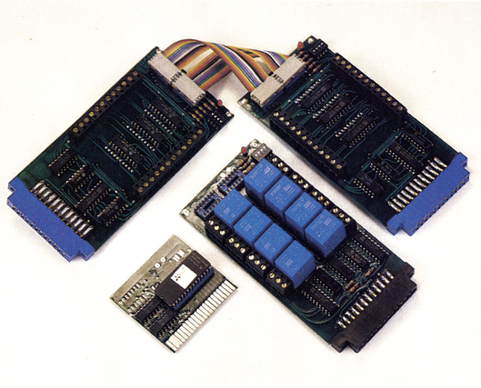

Steuern und Regeln mit dem C 64
Mit drei neuentwickelten Steckkarten für den User-Port Ihres C 64 werden Sie in die Lage versetzt, künftig auch hohe Spannungen oder Ströme mit Ihrem C 64 zu kontrollieren und zu schalten.
Will der C 64-Besitzer seinen Computer auch zum Steuern technischer Anlagen benutzen, so stehen ihm in der Regel am User-Port acht Ein/ Ausgabe-Leitungen zur Verfügung. Diese Anzahl von Leitungen reicht in den meisten Fällen jedoch nicht aus. Von der Firma Dela-Elektronik werden seit neuestem drei Karten (Bild 1) speziell für Steuer- und Regelzwecke angeboten:

- Digitalausgabe-Karte
- Digitaleingabe-Karte
- Relais-Karte
Die Digitalausgabe-Karte verfügt über 24 Ausgänge mit TTL-Logik (High-Pegel größer 3,2 Volt; Low-Pegel kleiner 0,8 Volt). Diese werden über drei Kanäle zu je 8 Bit selektiert.
Karte Nummer zwei, die Digitaleingabe-Karte, dient zum Überprüfen logischer TTL-Zustände. Auch hier stehen dem Anwender 24 Eingänge (drei Kanäle je 8 Bit) zur Verfügung.
Die Relais-Karte ist mit acht Relais bestückt, die je eine Schaltleistung von drei Ampere bei 125 Volt (Herstellerangaben) aufweisen. Dies reicht vollkommen aus, um kleine Elektrogeräte zu steuern (zum Beispiel mehrere Lampen für ein Lauflicht, etc.). Die Karte arbeitet nur mit einem Kanal, da acht Schaltmöglichkeiten über den User-Port direkt angesteuert werden können.
Am User-Port des C 64 können theoretisch bis zu 16 der Dela-Karten angeschlossen und auch angesteuert werden. Dazu sind auf jeder Karte vier DIL-Schalter angebracht, mit denen sich die Kartenadressen zwischen 0 und 15 einstellen lassen. Im Extremfall können so entweder 120 Relais, 360 TTL-Ausgänge oder 360 TTL-Eingänge geschaltet werden.
Die Stromversorgung der Karten wird standardmäßig vom Computer über den User-Port abgezapft. Es ist aber unbedingt zu empfehlen, die Karten mit einem externen Netzteil zu versorgen. Während in der Betriebsanleitung von Dela erst ab drei Platinen eine zusätzliche Stromversorgung empfohlen wird, ermittelten wir in einem Test, daß allein die Relaisplatine bei allen angezogenen Relais mehr als 300 mA(!) Strom braucht. Dies überschreitet den Maximalwert für die Belastung der CIA 6526 um 300 Prozent. Unser C 64 hielt die Belastung zwar für die Zeit des Tests durch, der CIA-Baustein erhitzte sich dabei aber erheblich! Für eine Daueranwendung (zum Beispiel eine Schaltuhr) ist die Relais-Karte ohne externes Netzteil daher auf keinen Fall geeignet.
Die Steuer-Software der Karten läßt sich sehr leicht erstellen. Einige kleine Programmbeispiele in Basic und Maschinensprache sind in der Anleitung mit abgedruckt. Für ungeübte Programmierer oder Einsteiger wird zum Preis von 49 Mark ein Steuermodul für den Expansions-Port angeboten. Mit Hilfe dieser Software lassen sich sehr leicht eigene Steuerungs-Anwendungen programmieren, speichern, editieren, austesten, sowie betreiben.
Preislich liegen die Karten im Bereich des Erschwinglichen. Die beiden Eingabe- beziehungsweise Ausgabekarten kosten je 49 Mark. Für die Relaiskarte ist das Doppelte, also 98 Mark, zu bezahlen. Als Zubehör werden das Steuermodul, Verbindungskabel zwischen zwei Karten und ein 1 Meter langes Anschlußkabel zum User-Port angeboten. Ein Zusatznetzteil befindet sich, obwohl dringendst empfohlen, nicht im Angebot. Hier muß sich der Anwender selbst behelfen.
(C.Q.Spitzner/ks)Info: Dela-Elektronik, Maastrichter Str. 23, 5000 Köln 1, Tel. (0221) 517081